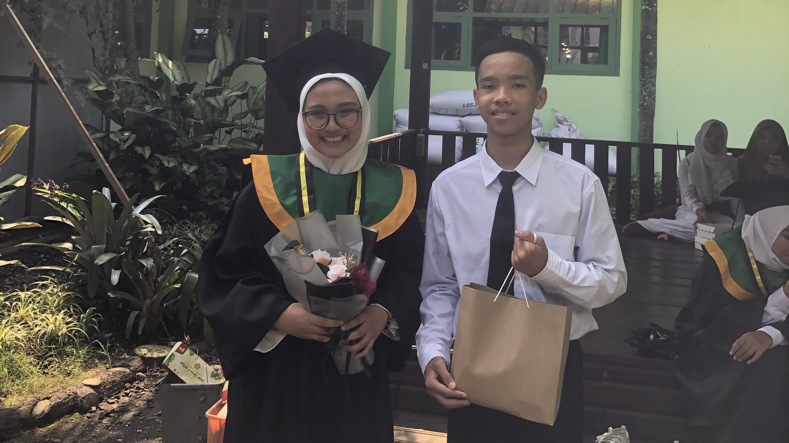

Happy Graduation, Brokk!
Hi Brokk, Btw selamat wisuda ya, Wassalamualaikum MAN 2, Assalamualaikum Aussie hahaha, habis ini lanjut cari ilmu di Aussie + jalan jalan, nii ada sedikit kenangan dariku asekkk, eh sebelumnya mungkin gk tak tulis semua karna ngga tau dan gk nemu fotonya, jadi aku tulis yang aku tau, silahkan dibaca :)
Kilas Balik
Fotbar Pertama

Inget ngga foto ini?? Fotbar pertama kita (yang niat) dan pada hari itu jadi tanggal dimana awal kita bakal jarang ketemu lagi karena uda beda sekolah, dan foto itu kita post di InstaStory sampai akhirnya rame banget dm kita wkwkwk.
Aku Suka Kalimatmu
masih di tanggal yang sama, aku inget kamu kek mau ngepost ato ngga, karena gk enak sama someone, yaa tapi ujung" nya tetep di post si, btw aku suka banget sama kata katanya, bakal tak inget terus si kata katanya
Typography
Masa masa aku suka banget buat typography salah satunya karena banyak stok kata kata darimu (dari bintang yang mbok kasi si) dan dulu sering banget kamu revisi, gini ternyata rasanya ngomongin desain sama orang perfeksionis wkwkwk.
Cap 3 Jari
Setelah beberapa bulan gak meet, baru beberapa bulan juga, ntah siapa yang ngambil foto ini, tapi sayang banget dulu gk bisa berlama lama, soale kamu harus segera pulang tapi aku baru dateng huhuhu
Buku Mantappu Jiwa
Btw Makasi banyak ya buat hadiahnya, aku suka bangett apalagi penulisnya jerome, keren ya kamu bisa buat aku yg gk suka baca buku ini jadi bisa cepet nyelesaiin buku ini cuman dalam beberapa hari, yaa ofc karna buku ini darimu juga hehe, makasii yaa masih tak simpen kok, buku, foto sama suratnya :)
Kampung Inggris
Inget ngga ini kapan??, yaa ini pas cfd di kediri, aku inget kita mau ketemu terus sama sama aktifin live loc, tapi malah kelewatan wkwk, dan ya kita akhirnya ketemu di indomaret, sayang banget dulu masih banyak wishlist yang belum terpenuhi, kayak menikmati senja di lapangan, main sama bocil dll, tapi gakpapa habis ini nikmatin waktumu di Aussie ya :)
Menang Madfest
Wiii, congrats ya buat prestasi nasionalnya, padahal dulu awal awal masuk man ngambis olim, eh rejekinya ternyata di Madfest, sekali lagi selamat ya
AFS Innovators
Akhirnya yaa percobaan kedua kamu ikut afs innovators berhasil juga, aku inget dulu pas kamu gagal saat percobaan pertama, curhat segala macem, apalagi pas wawancara wifimu lag, tapi ternyata kamu ngga nyerah gitu aja, kamu coba lagi and u did it, congrats broo
Keterima BIM
Bener bener berturut turut ya, kamu dapet pengumuman ketrima bim pas program akhir di afs, selamat ya, aku inget dulu kamu cerita lek nangis habis di interview, apalagi dulu pernah salah nilai, tapi malamnya aku ngimpi kalau kamu cerit ke ku kalok ketrima dann demmm akhirnya tanggal 2 kamu ketrima bener bener hadiah terbaik buat ultahmu gk sii
SS an WA
Aku inget kamu pernah ngirim ini, and thats true, uda cantik, pinter lagi, dapet beasiswa bener bener kek jerome, mimpinya pun sama :)
Hadiah Gantungan
dan yaa gantungan ini tetep gantung di tasku, bahkan sampek tasku sobek karena kecelakaan dulu, tapi gantungan ini bakal tak jaga terus, if u know, setiap aku sepedaan dan bawa tas, aku selalu meraba ke belakang, mastiin gantungannya gak jatuh :)
Perbiman Duniawi
Jadi manusia tersibuk di dunia iki wkwkwk, banyak project bim, belum lagi jadi osima, sampek gini tetep zoom meskipun di jalan wkwkwk, semangat banget, apa yang ngga buat bim
Summer Program
meskipun summer programnya ngga ke aussie tapi ini uda keren si, bener" meskipun ngga dapet sumpro yang ln masih dapet yg didalem negeri, aku inget kata" mu, tidak lolos sumpro, its not end of everything, jadi penyemangatku juga kata kata itu pas aku gk lolos OSN, btw makasi juga ya udah nyemangatin dan ngasi beberapa motivasi ke aku menjelang dan sesudah OSN :)
Tes Lagi
Bener bener ya semangat mu gk pernah padam, aku lupa ini tes SAT atau IELTS, pokok aku ingete kamu tes lagi karna porinmu kurang, kek e IELTS de, gilak sampek semahal itu yaa, tapi aku salut sama semangatmu sii, iyalah demi Aussie
Ikut FALP
Tiba tiba banget kamu ngajakin aku ikut FALP, dulu tak iya in lagi, meskipun kita sama sama gk lolos, tapi experience buat cv nya keren si, gini rasanya ternyata ribetnya buat cv, sama ngebut banget ngedit video wkwkwk
Dikira Ikut AOC
ini nihh, calon penghuni kursi Aoc, sampek mau di kick dari grup wkwkwk, aku belum dapet ceritanya dari kamu si gimana kronologi bisa sempet mau aoc,kapan kapan ceritain dong hehe
Mundur Eligible
ini foto yang kamu kirim setelah aku ngirim kalau aku eligible, yaa ngga heran si pasti lebih memilih kulliah di luar daripada dalam negeri
Jadi Eligible
ini nihh, tiba tiba aja, jadi eligible lagi padahal udah isi form pengunduran diri, bener" di all in semua dalam dan luar negeri
Ketrima SNBP
sebelumnya selamat ya ketrima di ub ( meskipun gk jadi ambil ) sementara aku ketolak, rasanya kek apalah udah osn gagal snbp gagal juga :(
Ketolak BIM
"cek tau merah" katamu kemaren pas ketolak bim, tapi meskipun merah, tapi merahmu di bim apalahh wkwkwk, beda sama orang orang yg merahnya di snbp, apalagi warna merah di snbp besar banget lagi, rasanya jlepp
Keterima Beasiswa Garuda
and finally kamu ketrima di beasiswa garuda, 4 tahun beda negara ni bakalan wkwk, gapapa apapun demi masa depan yang cerahkan, selamat yaa sekali lagi, dan selamat menimba ilmu di Aussie, negara yg kamu pengen, jangan lupa ntar foto" yang banyak yaa, enjoy your study bro :)
Wisuda
Akhirnyaa Wissudahhh, seneng banget pas mc nya bacain nama nama univ yang nerima kamu, kek ngebut bangett wkwkwk, gk bayangin kalau kamu ketrima 10 atau lebih gitu bakal se ngebut apa mc nya bacain
CFD
Dan yaaa akhirnya kita meet jg wkwkwk, kita spend time hampir seharian nihh, mungkin ini juga salah satu meet kita yg terakhir sebelum pisah lagi huhu, maaf ya kalau banyak yg kurang hihi
CFD
Dan yaaa kita meet jg wkwkwk, kita spend time hampir seharian nihh, mungkin ini juga salah satu meet kita yg terakhir sebelum pisah lagi huhu, maaf ya kalau banyak yg kurang hihi
Pengumuman SNBT
Ini salah satu momen paling hancur dalam hidupku asekkk, rasanya hancur bangett ketolak snbp, gagal osn, terus ketolak snbt, aku kayak hampir menyerah, bohong lek aku gk nangis melihat teman teman lain yang skornya lebih rendah dari aku lolos, tapi disitu kamu ngasi semangatt, kamu bantu cari info, minjemin buku buat aku belajar juga, Makasih banyak banyak yaaa
Pengumuman SNBT
Ini salah satu momen paling hancur dalam hidupku asekkk, rasanya hancur bangett ketolak snbp, gagal osn, terus ketolak snbt, aku kayak hampir menyerah, bohong lek aku gk nangis melihat teman teman lain yang skornya lebih rendah dari aku lolos, tapi disitu kamu ngasi semangatt, kamu bantu cari info, minjemin buku buat aku belajar juga, Makasih banyak banyak yaaa
Pengumuman UTUL
Akhirnya setelah belajar kurleb 1 bulann loloss juga, meskipun bukan pilihan pertama, ini kayak katamu "Harus Realistis" dan sekarang aku paham kenapa kok aku ditaruh di prodi ini dengan ukt segitu, sekarang semua masuk akal, terima kasih ya udah bantu persiapan, dari nyemangatin belajar, kadang diskusi soal, terus minjemin buku dan banyak lagiiii
Nah itu dia sedikit kilas balik dari aku, sebelumnya maap ya kalau ngga bisa dateng di wisuda mu soalnya krisis motor cuy wkwkwk (kesenjangan kendaraan), dan maaf kalau cuma bisa ngasi ini yang notabennya gk seberapa, gk kayak yg lain ngasi macem" barang tapi bagaimanapun itu selamat Lulus dari MAN, selamat juga udah ketrima di Monash University, selamat cari ilmu di Aussie, jangan lupain orang orang yang masih di Indo ( termasuk aku wkwk), kalau misal mau nambah foto ato gimana boleh banget chat aku yaa ntar tak tambahin, yaudah Happy Graduation ya bro, makasih udah jadi orang yg buat aku pernah ngambis banget kejar sesuatu,meskipun belum dapet hehe, tapi aku inget kamu pernah ngomong "Kalau OSN gk dapet pasti ada gantinya" yaa i still believe what u said, doain ya :), yaudah gitu aja sukses terus ya Mey, see yaa, sampai jumpa di lain waktu, bahagia bisa kenal orang kayak kamu🥹🤗